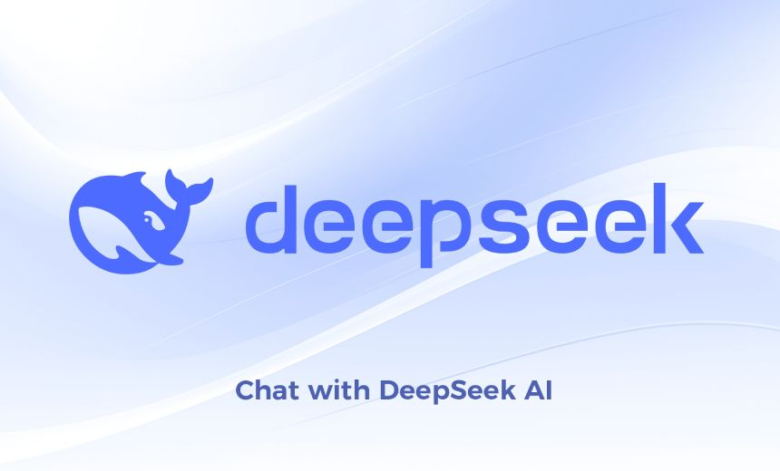
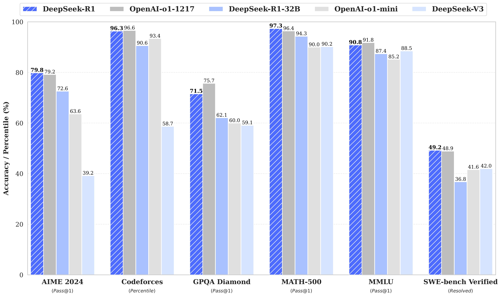

🕓2025年2月3日
视频教程：▶https://youtu.be/DNgQ-z0GsgQ

一、Deepseek 是什么
DeepSeek（深度求索）是中国一家专注于通用人工智能（AGI）的科技公司，成立于2023年，以高效大语言模型和智能体技术为核心，提供高性价比的AI产品及服务，涵盖个人助手、企业解决方案和开源模型，数学推理能力尤为突出。
DeepSeek开源地址>>点此访问
DeepSeek的优势
便宜大碗：效果对标国际顶级模型，但成本砍一大半，企业用得起。
数学开挂：考试解题比GPT-4还猛（实测MATH/GSM8K榜单能打）。
超长待机：一口气读几十万字不卡壳，合同论文随便塞。
直接开源：把核心模型（比如MoE-16b）免费甩出来，随便白嫖。
更新贼快：技术迭代卷到飞起，三天两头发新功能。
二、如何本地部署 DeepSeek-R1 大模型
1、本地部署，我们可以通过Ollama来进行安装
Ollama 官方版：【点击前往】
2、安装模型
Deepseek-r1 模型：【点击前往】
ollama list 查看下载好的模型
ollama run 复制对应的名字 即可运行对应的模型
3、如果你想在Web UI上体验，还可以安装一个 Chrome 浏览器的插件 page assist，启动Ollama服务之后呢，在Chrome浏览器中按住ctrl+shift+L即可打开这个页面。第一次打开，可能需要：
Web UI 控制端：【点击安装】
以下是使用 DeepSeek-R1 生成的推理数据，针对研究界广泛使用的几种密集模型进行微调而创建的模型。评估结果表明，提炼出的较小密集模型在基准测试中表现优异。
